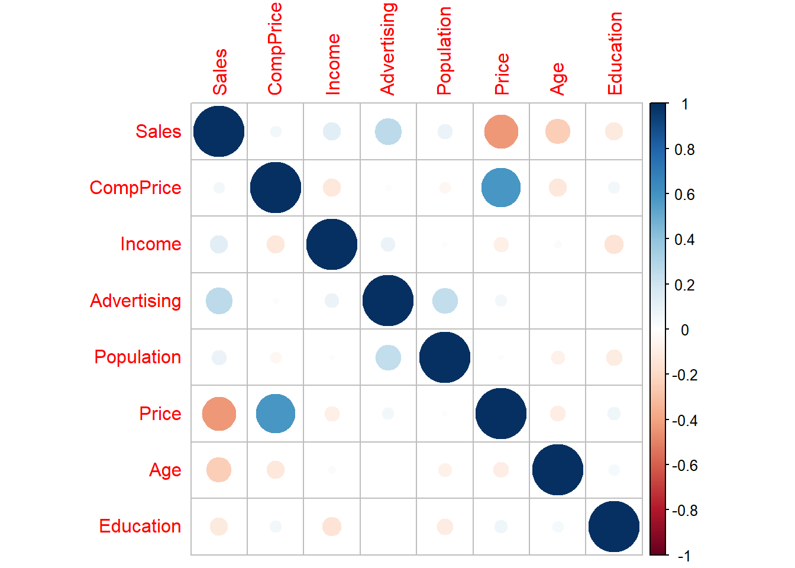
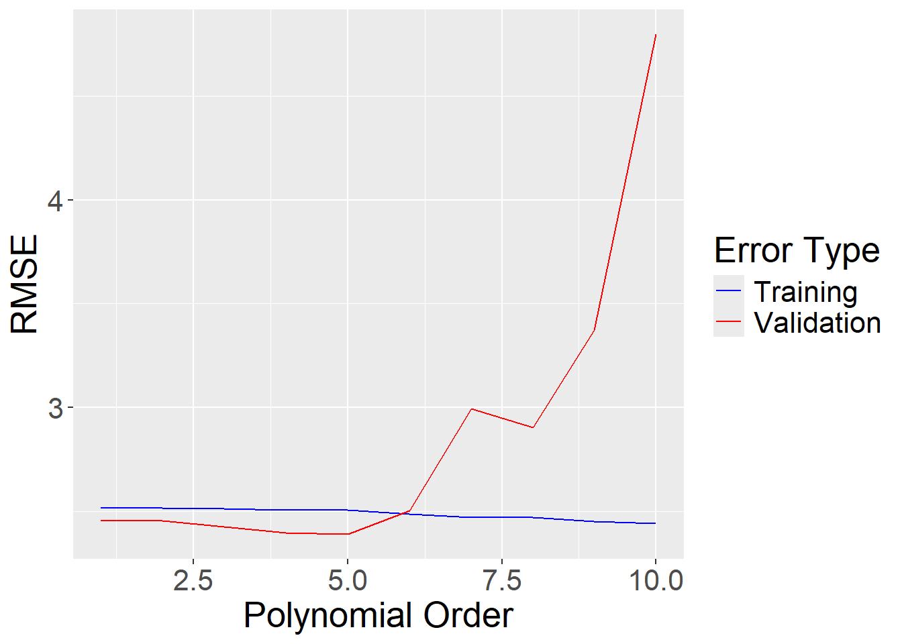
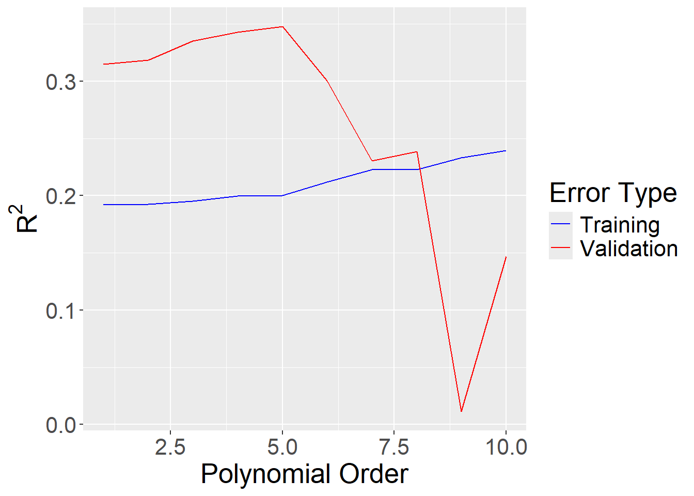

In this lab, we’ll be using linear regression to introduce the process of building a predictive regression model. Linear regression is a simple method for predicting a quantitative response variable \(Y\) on the basis of multiple predictors. That is, we assume that
Note that we typically use hats (i.e. \(\hat{y}\) ) to denote predictions. For the \(i\)th observation, the difference between the true response \(y_i\) and our predicted response \(\hat y_i\) is \(e_i = y_i - \hat y_i\), which we call the \(i\)th residual. The coefficients of a linear model are usually chosen using the least squares criterion. That is, if we have \(n\) observations on which to base our model, we choose the values of \(\beta_0, \beta_1, \ldots, \beta_m\) to minimize the Mean Squared Error (MSE), which is defined as:
There is a lot of statistical theory behind multiple linear regression which is explored in depth in other courses (namely Multiple Regression Analysis and Linear Algebra). The basis of this theory is the assumption that the true relationship between the predictors and the response variable is given by
where \(\epsilon\) is a normally distributed mean-zero random error term. Based on these assumptions, there are a number of metrics for assessing which variables are important in our model, which we can learn from the summary() function in R. For the purposes of this course, we should know that the coefficients tell us how a one unit change in one of the predictors affects the response. We should also know that the p-values tell us how confident we can be that one of the coefficients is different from zero, where p-values close to 0 imply high confidence and p-values close to 1 imply low confidence.
The Data
In this lab, you will practice multiple linear regression by working with the data set Carseats from the package ISLR2. This data set contains simulated data of child car seat sales at 400 different stores. Your prediction task in this lab will be to predict Sales from some combination of the other variables. Look at the help documentation for this data to explore the available variables.
Load the ISLR package and then load the data set Carseats. What is \(n\) and \(p\) for this data set?
There are \(n = 400\) observations and \(p = 11\) variables.
Data Splitting
When doing empirical modeling, we should set aside a portion of our data, to be used at the end, in assessing the performance of our final model(s). In fact, we should usually split our data into three sets:
training set: the set of data we use to build our models
validation set: the set of data used to compare different models and tune parameters
test set: the set of data used to give a final estimate of our model accuracy and sometimes compare a few final candidate models
The validation and test sets are frequently referred to as holdout sets since they are “held out” when we train our models. In general, the process of generating a model proceeds as follows. Warning: not everyone uses the same terminology and there is some variation in how people treat validation and test sets. For example, many people say tuning set instead of validation set and then call their test set the validation set. You begin by fitting a baseline (i.e. simple) model on your training set and evaluate it on your validation set. You then begin to create more complex models by selecting different types of models, changing preprocessing techniques, including more variables in your model, transforming your variables, and/or many other techniques. For each of these new models, you assess the performance on your validation set. Based on the results, you select one “best” model, group your training and validation set back together, refit the model on this larger set, and then assess the performance on your test set. This will give you an estimate on how well your model will perform in the real world. Some people use the test set to help with model selection, the process of selecting the parameters, variables, and methods used for generating your model. If you do decide to do that, I recommend only comparing a few models developed using different methods. I.e. use your validation set to find the best linear regression model, regression tree, or neural network and then compare those three on the test set.
A word of caution: keep your train, validation, and test sets SEPARATE. It’s much easier than you think to accidentally introduce information from your validation or test set into the modeling process which may lead to models which perform worse than you think they do. This is known as data leakage. For example, say that in order to preprocess your data you decide to center and scale some of the variables. If you center and scale the data before splitting it, you will be introducing information from the validation and test sets into your modeling process. In addition, the process that you use to prepare your training data should be applied exactly to your validation and test sets. For example, if you center and scale your variables before fitting a model, make sure that you use the mean and standard deviation from your training set to center and scale the validation and test sets.
This leads us to our next questions. How big should each of these data sets be? The answer to this depends on the problem at hand. The most important factor will be how much data you actually have. If you don’t leave enough in your training set, your model will be unstable and have large variance (i.e. it’s predictions will be too sensitive to the specific noise in data used to fit the model). If your holdout sets are too small your estimates of prediction accuracy will not be accurate. The questions you need to ask yourself are “Do all of my data sets contain enough data to be representative of the population?”. If your data set is small and this is impossible, there are other techniques that we’ll discuss later in this course (e.g. cross-validation and resampling) which can make the most of a small data set. In general, you most commonly see training-validation-test splits of 60-20-20, 70-15-15, or 80-10-10. We can use the function partition from the splitTools package to create partitions of our data. In the example below, I’ve created training, validation, and test sets using the data set mpg.
library(splitTools)set.seed(1988)# Generate list of vectors of indices for each setsplits <-partition(mpg$cty, p =c(train = .7, validation = .15, test = .15))# We can see that splits contains a list of three vectors, one for each setglimpse(splits)
List of 3
$ train : int [1:161] 1 2 4 6 7 8 9 10 11 12 ...
$ validation: int [1:39] 17 18 29 34 36 39 44 48 61 63 ...
$ test : int [1:34] 3 5 24 27 37 41 52 60 68 69 ...
That’s convenient! In fact, partition uses something called stratified sampling to ensure that the target variable is well represented in all three sets. If you’d like to not use too many packages, the createDataPartition from the caret packages works similarly however it can only split data into two sets at a time.
Create a training, validation, and test set from the Carseats data using a 60-20-20 split. Note that this is a random process so you will get different partitions every time you split your data. As a result, it is considered good practice to set your seed so that the results are reproducible. For this lab please use the seed 427. Using the training set, create a corrplot using the package corrplot. What quantitative variable is most highly correlated with Sales, our target variable?
set.seed(427)# Generate list of vectors of indices for each setsplits <-partition(Carseats$Sales, p =c(train = .6, validation = .2, test = .2))# Create setstraining <- Carseats[splits$train, ]validation <- Carseats[splits$validation, ]test <- Carseats[splits$test, ]library(corrplot)correlations <- training |>select(where(is.numeric)) |>cor()correlations |>corrplot()

correlations |>kable(digits =3)
Sales
CompPrice
Income
Advertising
Population
Price
Age
Education
Sales
1.000
0.050
0.125
0.270
0.088
-0.438
-0.242
-0.120
CompPrice
0.050
1.000
-0.122
-0.015
-0.047
0.588
-0.122
0.053
Income
0.125
-0.122
1.000
0.080
0.013
-0.088
0.023
-0.142
Advertising
0.270
-0.015
0.080
1.000
0.247
0.053
-0.004
0.002
Population
0.088
-0.047
0.013
0.247
1.000
0.013
-0.072
-0.102
Price
-0.438
0.588
-0.088
0.053
0.013
1.000
-0.095
0.068
Age
-0.242
-0.122
0.023
-0.004
-0.072
-0.095
1.000
0.048
Education
-0.120
0.053
-0.142
0.002
-0.102
0.068
0.048
1.000
Price is the variable most highly correlated with Sales.
Fitting Our First Model
In predictive modeling, we often begin with a simple baseline model, to which we compare other models. Any more complicated model must outperform the baseline model to be considered useful. We can use the lm function to fit a linear model and either the summary function or the broom package to summarize our model. The broom package provides three main functions which work with most models, converting them into more tidyverse friendly formats. These functions are tidy, glance, and augment which you can read more about here. In the chunk below I fit a linear regression model to predict city mpg using highway mpg on the training set I created above.
baseline_model <-lm(cty ~ hwy, data = training_mpg)# Using Broomlibrary(broom)baseline_model |>tidy() |>kable()
term
estimate
std.error
statistic
p.value
(Intercept)
0.9592242
0.3826053
2.507086
0.0131774
hwy
0.6784939
0.0158399
42.834477
0.0000000
baseline_model |>glance() |>kable()
r.squared
adj.r.squared
sigma
statistic
p.value
df
logLik
AIC
BIC
deviance
df.residual
nobs
0.9202525
0.9197509
1.20099
1834.792
0
1
-256.9294
519.8588
529.103
229.338
159
161
# Using Summarybaseline_model |>summary()
Call:
lm(formula = cty ~ hwy, data = training_mpg)
Residuals:
Min 1Q Median 3Q Max
-2.9216 -0.8151 0.0075 0.6505 4.1870
Coefficients:
Estimate Std. Error t value Pr(>|t|)
(Intercept) 0.95922 0.38261 2.507 0.0132 *
hwy 0.67849 0.01584 42.834 <2e-16 ***
---
Signif. codes: 0 '***' 0.001 '**' 0.01 '*' 0.05 '.' 0.1 ' ' 1
Residual standard error: 1.201 on 159 degrees of freedom
Multiple R-squared: 0.9203, Adjusted R-squared: 0.9198
F-statistic: 1835 on 1 and 159 DF, p-value: < 2.2e-16
Fit a linear model predicting Sales using the variable you identified in question 2. Write down the resulting model in the form: \[
\begin{aligned}
\text{Sales} = \beta_0 + \beta_1\times\text{Variable}.
\end{aligned}
\] Don’t forget to use your training set rather than the full data to train your model.
lm_base <-lm(Sales ~ Price, data = training)lm_base |>tidy() |>kable()
term
estimate
std.error
statistic
p.value
(Intercept)
13.6339694
0.8320927
16.385157
0
Price
-0.0529455
0.0070433
-7.517189
0
lm_base |>glance() |>kable()
r.squared
adj.r.squared
sigma
statistic
p.value
df
logLik
AIC
BIC
deviance
df.residual
nobs
0.1918729
0.1884774
2.528276
56.50813
0
1
-562.1501
1130.3
1140.742
1521.338
238
240
The resulting model is of the form:\[
\begin{aligned}
\text{Sales} = 13.74 - 0.05384\times \text{Price}
\end{aligned}
\]
Evaluating Our Model
Let’s now see how our model performs. Suppose we have a sequence of targets \(y_1,\ldots, y_n\) and a sequence of predictions for these targets \(\hat{y}_1, \ldots,\hat{y}_n\), sometimes referred to a fitted values. There are two primary metrics that we’ll use to quantify performance of regression models. The first is Root Mean-Squared Error (RMSE). The RMSE is the square-root of the Mean-Square Error which is computed as follows:
The RMSE can be interpreted as the average distance between your predictions and the values they are trying to predict. To make predictions with our model we use the function predict. In addition, we can add information like residuals and fitted values to our original data set using the function augment from the broom package. In the console below I compute the RMSE on the training set and the validation set for the mpg baseline model:
The RMSE on our training set is rround(training_RMSE, 3)` and on our validation set is 2.456.
The second primary metric that we can use to assess the accuracy of regression models is called the coefficient of determination, denoted \(R^2\). \(R^2\) is the proportion of variance (information) in our target variable that is explained by our model and can be computed by squaring \(R\), the correlation coefficient between the target variable \(y\) and the predicted target \(\hat{y}\). The lm function actually computes the \(R^2\) of our training data for us which we can access using either the summary function or the glance function from the broom package. Below, I use the glance function to get \(R^2\) on the training set for the mpg data:
The resulting \(R^2\) is 0.92. This implies that 92% of the variance in cty for our training data can be explained using only hwy which is, perhaps, not surprising. Computing \(R^2\) on a holdout set will take slightly more work:
We can see the about 19% of the variation in Sales is explained by Price in our training set and approximately 31% of the variation is explained in the validation set.
Build a two-input linear model for Sales by adding US to the model. You use the syntax lm(Y ~ X1 + X2, data). Save your model as lmfit1. Use summary or tidy to output the model and write the model as a formula, as above. Use the RMSE and R2 functions from the caret package to compute the RMSE and \(R^2\) values for this new model on both the training and validation sets. How do these compare to the baseline model?
lm1_aug <-augment(lmfit1, training)# Training setlibrary(caret)lm1_tr_rmse <-RMSE(lm1_aug$Sales, lm1_aug$.fitted)lm1_tr_R2 <-R2(lm1_aug$Sales, lm1_aug$.fitted)# Validation setlm1_pr_predictions <-predict(lmfit1, validation)lm1_val_rmse <-RMSE(validation$Sales, lm1_pr_predictions)lm1_val_R2 <-R2(validation$Sales, lm1_pr_predictions)#RMSE and R2 of Training Dataround(lm1_tr_rmse, 3)
[1] 2.484
round(lm1_tr_R2, 3)
[1] 0.213
#RMSE and R2 of Validation Setround(lm1_val_rmse, 3)
[1] 2.346
round(lm1_val_R2, 3)
[1] 0.391
The RMSE and \(R^2\) for the training data are 2.484 and rround(lm1_tr_R2, 3)`, respectively, which is MUCH better than the results for the baseline model. The RMSE and \(R^2\) for the validation set are 2.346 and 0.391 which are similarly improved.
Overfitting and the Bias-Variance Trade-Off
One can fit polynomial terms in lm using the formula y ~ poly(x, j, raw = TRUE) where j is the order of polynomial you want. For example:
In the cell below write a for loop which fits Sales as a function of Price for polynomials of order 1 through 10. I.e. you should fit 10 models. Plot the training vs. validation error for each. Based on your training set, which model performs best? Based on your validation set, which model performs best? Which model do you think would be better to use in practice? Note that you can use the functions RMSE and R2 from the caret package to more easily calculate the RMSE and \(R^2\).
library(caret)library(patchwork) # for arranging output# define number of modelsnum_models <-10# preallocate error vectorsrmses_training <-rep(0, num_models)r2_training <-rep(0, num_models)rmses_validation <-rep(0, num_models)r2_validation <-rep(0, num_models)Price_avg <-mean(training$Price)for(i in1:num_models){# first model of order i newmodel <-lm(Sales ~poly(Price, i, raw=TRUE), data = training) newmodel_aug <-augment(newmodel)# Training set error metrics rmses_training[i] <-RMSE(newmodel_aug$Sales, newmodel_aug$.fitted) r2_training[i] <-R2(newmodel_aug$Sales, newmodel_aug$.fitted)# Validation set error metrics newmodel_predictions <-predict(newmodel, validation) rmses_validation[i] <-RMSE(validation$Sales, newmodel_predictions) r2_validation[i] <-R2(validation$Sales, newmodel_predictions)}error_df <-tibble(order =1:num_models, rmses_training, rmses_validation, r2_training, r2_validation) |>pivot_longer(!order, names_to="error_type", values_to ="error")p1 <- error_df |>filter(error_type %in%c("rmses_training", "rmses_validation")) |>ggplot() +geom_line(aes(x = order, y = error, color=error_type)) +labs(x ="Polynomial Order",y ="RMSE",color ="Error Type") +scale_color_manual(labels =c("Training", "Validation"), values =c('blue', 'red')) +theme(text =element_text(size =20))p2 <- error_df |>filter(error_type %in%c("r2_training", "r2_validation")) |>ggplot() +geom_line(aes(x = order, y = error, color=error_type)) +labs(x ="Polynomial Order",y =bquote(R^2),color ="Error Type") +scale_color_manual(labels =c("Training", "Validation"), values =c('blue', 'red')) +theme(text =element_text(size =20))p1p2


Notice that while the metrics on the training data continue to improve whenever you increase the order of the polynomial but eventually begin to get worse on the validation set. This is because of a phenomenon known as overfitting. Overfitting occurs when your model starts matching the training TOO well. A good visualization of an overfit model is Figure 2 in the Wikipedia article for overfitting. As you include more variables/information in your model, your performance will ALWAYS increase on your training data. This is one of the reasons we always use holdout sets. Eventually your model will begin to overalign to the noise in your training data and the accuracy on holdout sets will be level off and in most cases begin to degrade.
Now let’s see what happens if we add in ALL of the predictors to our model. This is sometimes referred to as the full model. To include all of your predictors in a model you can use the syntax lm(Y ~ ., data). We’ll first do this with the mpg data:
The RMSE and \(R^2\) are 0.664 and 0.975, respectively, on training set and 0.969 and 0.954 when applied to the validation set.
Fit a model using all of the predictors in your training data. Call the model lmfull. Assess the models accuracy on the training data and the validation data, comparing it to the previous models we’ve fit, and comment on your results. Do you think overfitting is happening here? Why or why not?
The RMSE and \(R^2\) for the training data are 0.961 and rround(lmfull_tr_R2, 3)`, respectively, which is MUCH better than the results for the baseline model. The RMSE and \(R^2\) for the validation set are 1.093 and 0.865 which is similarly improved. It does not seem as if overfitting is occuring.